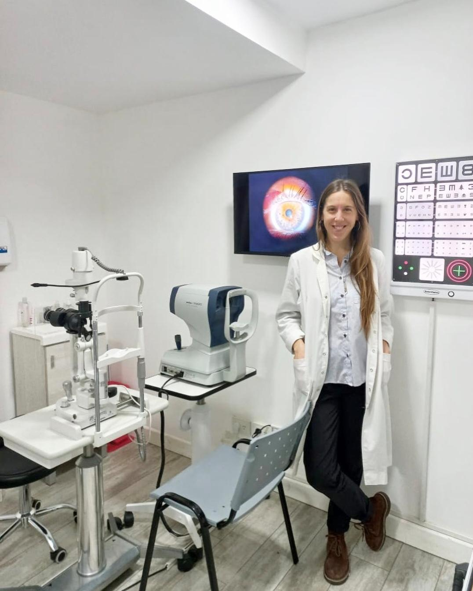

Adultos · Niños · Glaucoma
Dra. María Juliana
Dra. María Juliana
Rigoni
Oftalmología general para adultos y niños. Diagnóstico y seguimiento de glaucoma, control visual, prescripción óptica y patologías del segmento anterior.
Ver perfil completo